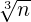

call p%set(what,val,info [,ilev, ilmax, pos, idx])
This method sets the parameters defining the preconditioner p. More precisely, the parameter identified by what is assigned the value contained in val.
Arguments
what | character(len=*). |
| The parameter to be set. It can be specified through its name; the string is case-insensitive. See Tables 2-8. |
val | integer or character(len=*) or real(psb_spk_) or real(psb_dpk_), intent(in). |
| The value of the parameter to be set. The list of allowed values and the corresponding data types is given in Tables 2-8. When the value is of type character(len=*), it is also treated as case insensitive. |
info | integer, intent(out). |
| Error code. If no error, 0 is returned. See Section 8 for details. |
ilev | integer, optional, intent(in). |
| For the multilevel preconditioner, the level at which the preconditioner parameter has to be set. The levels are numbered in increasing order starting from the finest one, i.e., level 1 is the finest level. If ilev is not present, the parameter identified by what is set at all the appropriate levels (see Tables 2-8). |
ilmax | integer, optional, intent(in). |
| For the multilevel preconditioner, when both ilev and ilmax are present, the settings are applied at all levels ilev:ilmax. When ilev is present but ilmax is not, then the default is ilmax=ilev. The levels are numbered in increasing order starting from the finest one, i.e., level 1 is the finest level. |
pos | charater(len=*), optional, intent(in). |
| Whether the other arguments apply only to the pre-smoother (’PRE’) or to the post-smoother (’POST’). If pos is not present, the other arguments are applied to both smoothers. If the preconditioner is one-level or the parameter identified by what does not concern the smoothers, pos is ignored. |
idx | integer, optional, intent(in). |
| An auxiliary input argument that can be passed to the underlying objects. |
For compatibility with the previous versions of MLD2P4, this method can be also invoked as follows:
call mld_precset(p,what,val,info)
However, in this case the optional arguments ilev, ilmax, pos and idx cannot be
used.
A variety of preconditioners can be obtained by a suitable setting of the preconditioner parameters. These parameters can be logically divided into four groups, i.e., parameters defining
A list of the parameters that can be set, along with their allowed and default values, is
given in Tables 2-8. For a description of the meaning of the parameters, please refer
also to Section 4.
Remark 2. A smoother is usually obtained by combining two objects: a smoother (SMOOTHER_TYPE) and a local solver (SUB_SOLVE), as specified in Tables 7-8. For example, the block-Jacobi smoother using ILU(0) on the blocks is obtained by combining the block-Jacobi smoother object with the ILU(0) solver object. Similarly, the hybrid Gauss-Seidel smoother (see Note in Table 7) is obtained by combining the block-Jacobi smoother object with a single sweep of the Gauss-Seidel solver object, while the point-Jacobi smoother is the result of combining the block-Jacobi smoother object with a single sweep of the pointwise-Jacobi solver object. However, for simplicity, shortcuts are provided to set point-Jacobi, hybrid (forward) Gauss-Seidel, and hybrid backward Gauss-Seidel, i.e., the previous smoothers can be defined by setting only SMOOTHER_TYPE to appropriate values (see Tables 7), i.e., without setting SUB_SOLVE too.
The smoother and solver objects are arranged in a hierarchical manner. When specifying a smoother object, its parameters, including the local solver, are set to their default values, and when a solver object is specified, its defaults are also set, overriding in both cases any previous settings even if explicitly specified. Therefore if the user sets a smoother, and wishes to use a solver different from the default one, the call to set the solver must come after the call to set the smoother.
Similar considerations apply to the point-Jacobi, Gauss-Seidel and block-Jacobi
coarsest-level solvers, and shortcuts are available in this case too (see Table 5).
Remark 3. In general, a coarsest-level solver cannot be used with both the replicated and distributed coarsest-matrix layout; therefore, setting the solver after the layout may change the layout. Similarly, setting the layout after the solver may change the solver.
More precisely, UMFPACK and SuperLU require the coarsest-level matrix to be replicated, while SuperLU_Dist requires it to be distributed. In these cases, setting the coarsest-level solver implies that the layout is redefined according to the solver, ovverriding any previous settings. MUMPS, point-Jacobi, hybrid Gauss-Seidel and block-Jacobi can be applied to replicated and distributed matrices, thus their choice does not modify any previously specified layout. It is worth noting that, when the matrix is replicated, the point-Jacobi, hybrid Gauss-Seidel and block-Jacobi solvers reduce to the corresponding local solver objects (see Remark 2). For the point-Jacobi and Gauss-Seidel solvers, these objects correspond to a single point-Jacobi sweep and a single Gauss-Seidel sweep, respectively, which are very poor solvers.
On the other hand, the distributed layout can be used with any solver but UMFPACK and SuperLU; therefore, if any of these two solvers has already been selected, the coarsest-level solver is changed to block-Jacobi, with the previously chosen solver applied to the local blocks. Likewise, the replicated layout can be used with any solver but SuperLu_Dist; therefore, if SuperLu_Dist has been previously set, the coarsest-level solver is changed to the default sequential solver.
Remark 4. The argument idx can be used to allow finer control for those solvers; for instance, by specifying the keyword MUMPS_IPAR_ENTRY and an appropriate value for idx, it is possible to set any entry in the MUMPS integer control array. See also Sec. 7.
what | data type | val | default | comments |
’ML_CYCLE’ | character(len=*) | ’VCYCLE’ ’WCYCLE’ ’KCYCLE’ ’MULT’ ’ADD’ | ’VCYCLE’ | Multilevel cycle: V-cycle, W-cycle, K-cycle, hybrid Multiplicative Schwarz, and Additive Schwarz. Note that hybrid Multiplicative Schwarz is equivalent to V-cycle and is included for compatibility with previous versions of MLD2P4. |
’OUTER_SWEEPS’ | integer | Any integer number ≥ 1 | 1 | Number of multilevel cycles. |
what | data type | val | default | comments |
’MIN_COARSE_SIZE’ | integer | Any number > 0 | ⌊40⌋, where n is the dimension of the matrix at the finest level | Coarse size threshold. The aggregation stops if the global number of variables of the computed coarsest matrix is lower than or equal to this threshold (see Note). |
’MIN_CR_RATIO’ | real | Any number > 1 | 1.5 | Minimum coarsening ratio. The aggregation stops if the ratio between the matrix dimensions at two consecutive levels is lower than or equal to this threshold (see Note). |
’MAX_LEVS’ | integer | Any integer number > 1 | 20 | Maximum number of levels. The aggregation stops if the number of levels reaches this value (see Note). |
’PAR_AGGR_ALG’ | character(len=*) | ’DEC’, ’SYMDEC’ | ’DEC’ | Parallel aggregation algorithm. Currently, only the decoupled aggregation (DEC) is available; the SYMDEC option applies decoupled aggregation to the sparsity pattern of A + AT . |
’AGGR_TYPE’ | character(len=*) | ’SOC1’ | ’SOC1’, ’SOC2’ | Type of aggregation algorithm: currently, we implement to measures of strength of connection, the one by Vaněk, Mandel and Brezina [26], and the one by Gratton et al [16]. |
’AGGR_PROL’ | character(len=*) | ’SMOOTHED’, ’UNSMOOTHED’ | ’SMOOTHED’ | Prolongator used by the aggregation algorithm: smoothed or unsmoothed (i.e., tentative prolongator). |
what | data type | val | default | comments |
’AGGR_ORD’ | character(len=*) | ’NATURAL’ ’DEGREE’ | ’NATURAL’ | Initial ordering of indices for the aggregation algorithm: either natural ordering or sorted by descending degrees of the nodes in the matrix graph. |
’AGGR_THRESH’ | real(kind_parameter) | Any real number ∈ [0,1] | 0.01 | The threshold θ in the aggregation algorithm, see (3) in Section 4.2. See also the note at the bottom of this table. |
’AGGR_FILTER’ | character(len=*) | ’FILTER’ ’NOFILTER’ | ’NOFILTER’ | Matrix used in computing the smoothed prolongator: filtered or unfiltered (see (5) in Section 4.2). |
what | data type | val | default | comments |
’COARSE_MAT’ | character(len=*) | ’DIST’ ’REPL’ | ’REPL’ | Coarsest matrix layout: distributed among the processes or replicated on each of them. |
’COARSE_SOLVE’ | character(len=*) | ’MUMPS’ ’UMF’ ’SLU’ ’SLUDIST’ ’JACOBI’ ’GS’ ’BJAC’ | See Note. | Solver used at the coarsest level: sequential LU from MUMPS, UMFPACK, or SuperLU (plus triangular solve); distributed LU from MUMPS or SuperLU_Dist (plus triangular solve); point-Jacobi, hybrid Gauss-Seidel or block-Jacobi. Note that UMF and SLU require the coarsest matrix to be replicated, SLUDIST, JACOBI, GS and BJAC require it to be distributed, and MUMPS can be used with either a replicated or a distributed matrix. When any of the previous solvers is specified, the matrix layout is set to a default value which allows the use of the solver (see Remark 3, p. 24). Note also that UMFPACK and SuperLU_Dist are available only in double precision. |
’COARSE_SUBSOLVE’ | character(len=*) | ’ILU’ ’ILUT’ ’MILU’ ’MUMPS’ ’SLU’ ’UMF’ | See Note. | Solver for the diagonal blocks of the coarse matrix, in case the block Jacobi solver is chosen as coarsest-level solver: ILU(p), ILU(p,t), MILU(p), LU from MUMPS, SuperLU or UMFPACK (plus triangular solve). Note that UMFPACK and SuperLU_Dist are available only in double precision. |
what | data type | val | default | comments |
’COARSE_SWEEPS’ | integer | Any integer number > 0 | 10 | Number of sweeps when JACOBI, GS or BJAC is chosen as coarsest-level solver. |
’COARSE_FILLIN’ | integer | Any integer number ≥ 0 | 0 | Fill-in level p of the ILU factorizations. |
’COARSE_ILUTHRS’ | real(kind_parameter) | Any real number ≥ 0 | 0 | Drop tolerance t in the ILU(p,t) factorization. |
what | data type | val | default | comments |
’SMOOTHER_TYPE’ | character(len=*) | ’JACOBI’ ’GS’ ’BGS’ ’BJAC’ ’AS’ | ’FBGS’ | Type of smoother used in the multilevel preconditioner: point-Jacobi, hybrid (forward) Gauss-Seidel, hybrid backward Gauss-Seidel, block-Jacobi, and Additive Schwarz. It is ignored by one-level preconditioners. |
’SUB_SOLVE’ | character(len=*) | ’JACOBI’ ’GS’ ’BGS’ ’ILU’ ’ILUT’ ’MILU’ ’MUMPS’ ’SLU’ ’UMF’ | GS and BGS for pre- and post-smoothers of multilevel preconditioners, respectively ILU for block-Jacobi and Additive Schwarz one-level preconditioners | The local solver to be used with the smoother or one-level preconditioner (see Remark 2, page 24): point-Jacobi, hybrid (forward) Gauss-Seidel, hybrid backward Gauss-Seidel, ILU(p), ILU(p,t), MILU(p), LU from MUMPS, SuperLU or UMFPACK (plus triangular solve). See Note for details on hybrid Gauss-Seidel. |
’SMOOTHER_SWEEPS’ | integer | Any integer number ≥ 0 | 1 | Number of sweeps of the smoother or one-level preconditioner. In the multilevel case, no pre-smother or post-smoother is used if this parameter is set to 0 together with pos=’PRE’ or pos=’POST, respectively. |
’SUB_OVR’ | integer | Any integer number ≥ 0 | 1 | Number of overlap layers, for Additive Schwarz only. |
what | data type | val | default | comments |
’SUB_RESTR’ | character(len=*) | ’HALO’ ’NONE’ | ’HALO’ | Type of restriction operator, for Additive Schwarz only: HALO for taking into account the overlap, NONE for neglecting it. Note that HALO must be chosen for the classical Addditive Schwarz smoother and its RAS variant. |
’SUB_PROL’ | character(len=*) | ’SUM’ ’NONE’ | ’NONE’ | Type of prolongation operator, for Additive Schwarz only: SUM for adding the contributions from the overlap, NONE for neglecting them. Note that SUM must be chosen for the classical Additive Schwarz smoother, and NONE for its RAS variant. |
’SUB_FILLIN’ | integer | Any integer number ≥ 0 | 0 | Fill-in level p of the incomplete LU factorizations. |
’SUB_ILUTHRS’ | real(kind_parameter) | Any real number ≥ 0 | 0 | Drop tolerance t in the ILU(p,t) factorization. |
’MUMPS_LOC_GLOB’ | character(len=*) | LOCAL_SOLVER’ GLOBAL_SOLVER’ | GLOBAL_SOLVER’ | Whether MUMPS should be used as a distributed solver, or as a serial solver acting only on the part of the matrix local to each process. |
’MUMPS_IPAR_ENTRY’ | integer | Any integer number | 0 | Set an entry in the MUMPS integer control array, as chosen via the idx optional argument. |
’MUMPS_RPAR_ENTRY’ | real | Any real number | 0 | Set an entry in the MUMPS real control array, as chosen via the idx optional argument. |